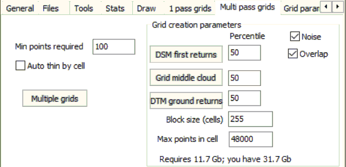

 |
You can use:
- Noise points: if the noise parts are mostly identified in the
point cloud, not using them can simplify grid creation.
- Overlap points: if the edge of the overlap occurs within the
cell, it could double the return density in part of the cell,
potentially skewing the results. Wihtout overlap the return
density within the cell should be more uniform. This will be
increasingly important as the cell size increases.
Min points required: unless the cell has at least this number of
returns, it will not be used. This is designed for cases like bird
strikes over water, where the only returns might be unrecognized noise.
Auto thin by cell: if this is checked, when any cell within the block
gets to the max number of returns, the block will be recomputed with a
thinning factor increased by one. The computations will use only
ever 2d point. These should be randomly distributed, and with
10,000s of points the statistics should be equivalent. If thinning
of 2 is insufficient, it will be increased again until no cell within
the block has too many returns. This becomes a bigger issue as the
cell size increases, or the number of returns per square meter
increases.
Set the percentile: 100 at the top of the cloud, 50 at the median,
and 0 at the base. In case of unrecognized noise, high or low, pick a
percentile like 99 (the best choice depends on the number of points in
the tile and the number of noise points).
Block size to use. This is the side of the block; the number of
cells determined in each pass through the data will be the square of
this. This affects the memory that must be allocated. This determines the number of passes through
the data.
Maximum number of returns in a cell. This affects the memory
that must be allocated. Returns beyond this number
will be ignored, which might or might not be an acceptable solution. If the
points were randomly distributed in the LAS file, this would probably work,
but if they are sorted by elevation, either deliberately or accidently, it
might be a problem. If this is too small, you will be told upon
completion, and should consider redoing. You can avoid this is Auto
thin by cell.
The memory required below suggests when you might adjust the
parameters which determine the size (block size and max returns per
cell). If you have lots of other things open, you don't have
the free memory shown which is the total on the system.
Grid parameters picked on the
Grid params tab.
|
 Open database without map,
to convert to DBF
Open database without map,
to convert to DBF LIDAR Point clouds on map
LIDAR Point clouds on map